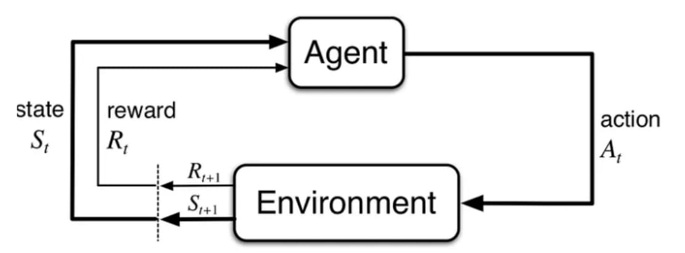

Enhancing Robot Social Navigation with
Reinforcement Learning and Advanced
Predictive Models
Reinforcement Learning and Advanced
Predictive Models
Goodluck Oguzie
190212683@aston.ac.uk
Presentation Outline
- Context and Scope
- Foundations of Social Robot Navigation
- Reinforcement Learning
- Environments Used
- Predictive World Models *
- Cosine-Gated LSTM (CGLSTM) *
- Adaptive Prediction Horizons *
- Conclusion
Context and Scope
What is Social Robot Navigation?
Approaches to Social Robot Navigation
Existing methods include:
- Traditional:
- Path planning (A*, Dijkstra’s) – Static focus
- Social force models – Crowd dynamics
- Rule-based – Limited adaptability
- Modern:
- Reinforcement Learning (RL) – Dynamic adaptability
- Predictive Models (e.g., LSTM, GRU) – Forecast human behavior
- Socially Aware Navigation – Respect human comfort zones
| Method | Strength | Limitation |
|---|---|---|
| Path Planning (A*) | Efficient in static settings | Fails with human unpredictability |
| Social Force Models | Models crowd behavior | Limited to predefined rules |
| Reinforcement Learning | Adapts to dynamic environments | Requires extensive training |
| World Models | Efficient training in simulation | Computationally intensive |
Foundations of Social Robot Navigation
Foundations of Social Robot Navigation
- Historical Overview: Evolved from classical path planning to ML-based methods (Chapter 4, p. 58).
- Approaches:
- Classical: Path planning (A*, Dijkstra’s), rule-based systems (Chapter 4, p. 60).
- Machine Learning: RL, predictive models for dynamic settings (Chapter 4, p. 61).
- SocNavGym: A benchmark environment for testing social navigation (Chapter 4, p. 63).

RESEARCH QUESTIONS
- 🔍 Q1: How do predictive world models improve decision-making in Social Robot Navigation?
- 🔍 Q2: What challenges arise when transitioning from discrete to continuous action spaces, and how do we address them?
Reinforcement Learning
Reinforcement Learning Basics
- Overview: RL learns optimal actions through trial-and-error, maximizing rewards (Chapter 3, p. 34).
- Key Concepts:
Category Description Model-Free Learns directly from experience without a world model (Chapter 3, p. 36). Model-Based Uses a learned or simulated world model for planning (Chapter 3, p. 36). - Goal: Adapt to dynamic environments, like social navigation.

RL in Social Robot Navigation
- Role: Enables robots to navigate dynamically in human-populated environments (Chapter 4, p. 61).
- Challenges: Human unpredictability, computational cost, and action space complexity (Chapter 3, p. 40–51).
- Key Algorithms Used in This Research:
- Model-Free:
- Deep Q-Network
- Proximal Policy Optimization
- Soft Actor-Critic
- Model-Based:
- DreamerV3
- Model-Free:
RL in Social Robot Navigation
- Key Algorithms Used in This Research:
Algorithm Strength Weakness Deep Q-Network Effective for discrete actions Struggles with continuous actions Proximal Policy Optimization Stable and sample-efficient Requires careful hyperparameter tuning Soft Actor-Critic Robust exploration and continuous actions Higher computational cost DreamerV3 Efficient simulation-based learning Requires accurate world model
RL in Social Robot Navigation
- Key Algorithms Used in This Research:
Algorithm Application Deep Q-Network Handles complex state spaces in SocNavGym (Chapter 3, p. 40). Proximal Policy Optimization Stable navigation in dynamic settings (Chapter 3, p. 40). Soft Actor-Critic Robust exploration for human interactions (Chapter 3, p. 40). DreamerV3 Efficient planning using world models (Chapter 3, p. 36).

Environments Used
FallingBallEnv *
- Purpose: Synthetic environment for sequence prediction, developed by me to test RL and predictive models (Chapter 6, p. 103; Chapter 7, p. 132).
- Role: Evaluates trajectory prediction and dynamic adaptation in social navigation tasks.

LunarLander-v2
- Purpose: Continuous control task for testing RL algorithms (Chapter 7, p. 132; Chapter 8, p. 150).
- Role: Assesses RL performance in dynamic, physics-based environments for social navigation insights.

SocNavGym
- Purpose: Benchmark environment for social navigation, testing RL and predictive models (Chapter 4, p. 63; Chapter 7, p. 132).
- Role: Simulates human-populated environments for evaluating robot navigation strategies.

LiteSocNavGym *
- Purpose: Lightweight version of SocNavGym, developed by me for efficient testing of RL and predictive models (Chapter 7, p. 132).
- Role: Optimizes computational resources while maintaining social navigation evaluation capabilities.

Predictive World Models *
Predictive World Models for Social Navigation
Predictive World Models for Social Navigation
Our Proposed Methods
- 📌 2StepAhead: Baseline model with a fixed two-step prediction horizon for lightweight human trajectory forecasting in SocNavGym (Chapter 5, p. 83–84).
- 📌 MASPM (Multi-Action State Prediction Model): Advanced model predicting multiple future states and actions for adaptability to dynamic human behavior (Chapter 5, p. 84–85).
- 📌 2StepAhead-MASPM: Hybrid approach combining 2StepAhead’s simplicity with MASPM’s adaptability for balanced performance (Chapter 5, p. 85).
Predictive World Models for Social Navigation
Challenges Mitigated by Our Methods
- ⚠️ Inflexibility of Fixed Prediction Horizons: Fixed horizons (e.g., 2StepAhead’s two-step window) fail to adapt to unpredictable human movements in SocNavGym, risking unsafe navigation (Chapter 5, p. 86).
- ⚠️ High Computational Cost: Complex predictions impose significant demands, hindering real-time navigation on resource-constrained robots (Chapter 5, p. 84).
- ⚠️ Inaccuracy from Sparse/Noisy Sensor Data: Sparse or noisy data (e.g., LIDAR, cameras) leads to unreliable predictions, increasing navigation errors (Chapter 5, p. 87).
- 📌 Our methods (2StepAhead, MASPM, 2StepAhead-MASPM) address these to enhance safety, efficiency, and social acceptability (Chapter 5, p. 87–88).

Predictive World Models for Social Navigation
Evaluation
- 📊 Environments: Tested in SocNavGym (Chapter 5, p. 87).
- 📊 Metrics: Cumulative reward, human discomfort, collisions, success rate, personal space compliance, distance travelled, simulation time, idle time, and max steps (Chapter 5, p. 87–89).
- 📊 Comparison: Against Vanilla Dueling DQN, Dueling DQN + Hidden State, RVO2, Social Force Model, and WM Dueling DQN (Chapter 5, p. 87–90).
- 📈 Results: 2StepAhead-MASPM outperforms baselines, balancing adaptability to dynamic environments, computational efficiency, and prediction accuracy with sparse/noisy data (e.g., 15% success rate improvement, 4% higher cumulative reward, Chapter 5, p. 88–90).

Predictive World Models for Social Navigation
Conclusion and Implications
- ✅ 2StepAhead, MASPM, and 2StepAhead-MASPM significantly enhance predictive world models, addressing key challenges in social navigation (Chapter 5, p. 87–88).
- 🌍 Implications: Improved robot navigation for real-world deployment in human-populated environments, enhancing safety and social acceptance (Chapter 5, p. 88).
- 🔮 Future work: Refine models for real-time hardware constraints and expand to diverse social scenarios beyond SocNavGym (Chapter 5, p. 88).
Cosine-Gated LSTM (CGLSTM) *
Cosine-Gated LSTM (CGLSTM) for Prediction
Challenges/Limitations
- ⚠️ Prediction Accuracy: Struggles with long-term sequences (e.g., FallingBallEnv, Chapter 6, p. 94).
- ⚠️ Sparse Data: Limited data affects performance (Chapter 6, p. 113).
- ⚠️ Computational Complexity: Higher demands (Chapter 6, p. 98).

Cosine-Gated LSTM (CGLSTM) for Prediction
Methods
- ➡️ Architecture: Cosine similarity-based gating for improved sequence prediction (Chapter 6, p. 96).
- ➡️ Training: Backpropagation Through Time (BPTT) in SocNavGym and FallingBallEnv (Chapter 6, p. 98).
- ➡️ Integration: Combined with DreamerV3 and Soft Actor-Critic for RL (Chapter 6, p. 114).

Cosine-Gated LSTM (CGLSTM) for Prediction
Evaluation
- 📊 Environments: SocNavGym, FallingBallEnv, and more (Chapter 6, p. 103–114).
- 📊 Metrics: MAE, MSE, accuracy (e.g., 30% MAE reduction in FallingBallEnv, Chapter 6, p. 103).
- 📊 Comparison: Against LSTM, GRU, RAU (Chapter 6, p. 103).

Cosine-Gated LSTM (CGLSTM) for Prediction
Results
- ✅ FallingBallEnv: 30% MAE reduction, enhancing prediction accuracy (Chapter 6, p. 103).
- ✅ SocNavGym: 5% reward improvement, improving RL performance (Chapter 6, p. 113–114).
- ✅ Additional Tasks: Outperformed baselines (Chapter 6, p. 108–111).

Adaptive Prediction Horizons *
Adaptive Prediction Horizons in RL
Challenges/Limitations
- ⚠️ Fixed Horizons: Lack adaptability in dynamic settings (e.g., SocNavGym, Chapter 7, p. 122).
- ⚠️ Computational Cost: Higher demands (Chapter 7, p. 125).
- ⚠️ Exploration Uncertainty: Balancing challenges (Chapter 7, p. 121).

Adaptive Prediction Horizons in RL
Methods
- ➡️ Entropy-Driven Adaptation: Adjusts horizons dynamically for RL (Chapter 7, p. 125).
- ➡️ Integration: With CGLSTM and Soft Actor-Critic for robust navigation (Chapter 7, p. 124).
- ➡️ Framework: Entropy-based selection for optimal horizon adjustment (Chapter 7, p. 127–128).

Adaptive Prediction Horizons in RL
Evaluation
- 📊 Environments: SocNavGym, FallingBallEnv, LunarLander-v2 (Chapter 7, p. 132).
- 📊 Metrics: Success rates, rewards, inference time (e.g., 15% success rate improvement in SocNavGym, Chapter 7, p. 136).
- 📊 Comparison: Against fixed-horizon models (Chapter 7, p. 138).

Adaptive Prediction Horizons in RL
Results
- ✅ SocNavGym: 15% success rate improvement, enhancing RL adaptability (Chapter 7, p. 138).
- ✅ FallingBallEnv: 10% MAE reduction, improving prediction accuracy (Chapter 7, p. 141).
- ✅ LunarLander-v2: 8% reward improvement, boosting RL performance (Chapter 7, p. 141).

Conclusion
Conclusion
- Contributions: CGLSTM, adaptive horizons, RL integration (Chapter 8, p. 147–149).
- Impact: Improved success rates and efficiency (Chapter 8, p. 150–151).
- Future Work: Real-world deployment, sensor noise (Chapter 8, p. 151–153).